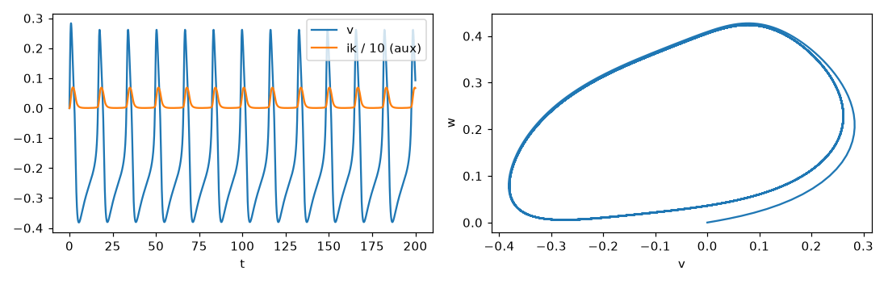
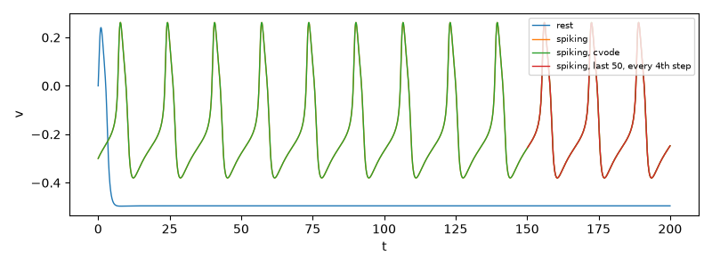
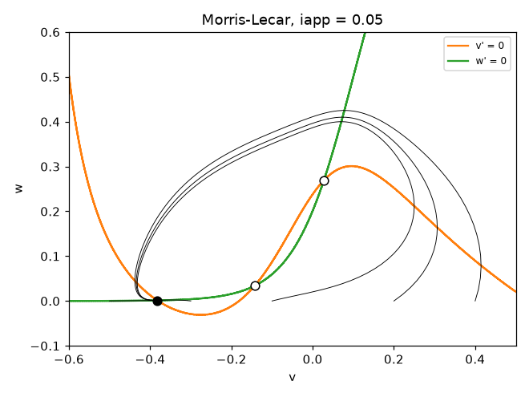
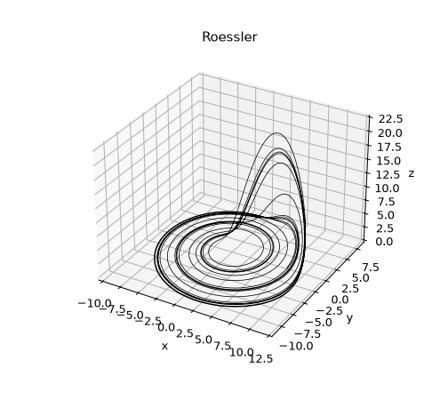
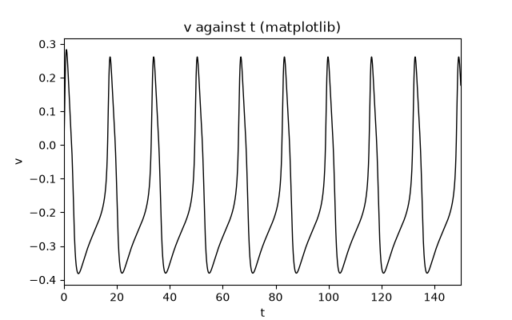
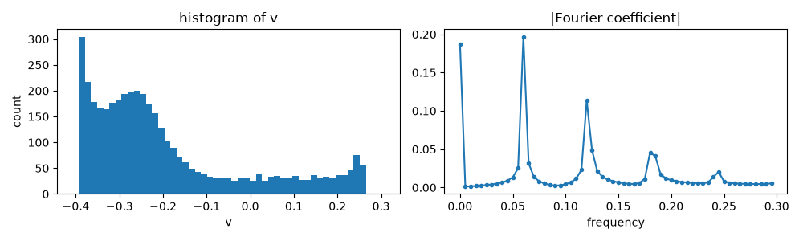
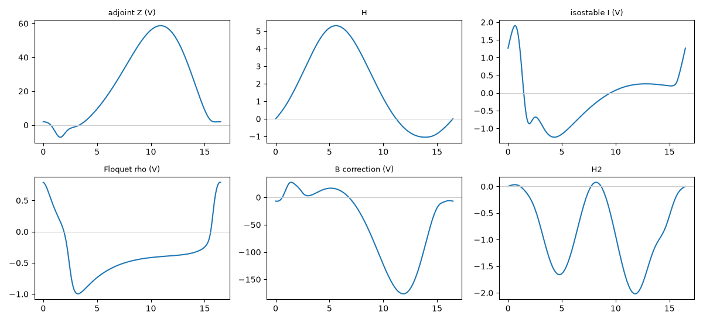
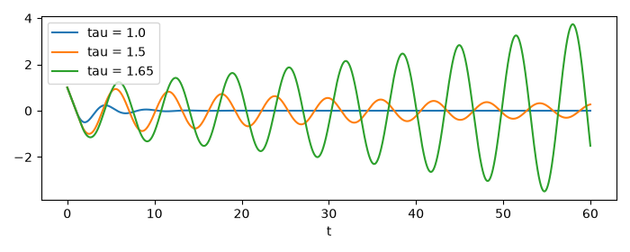
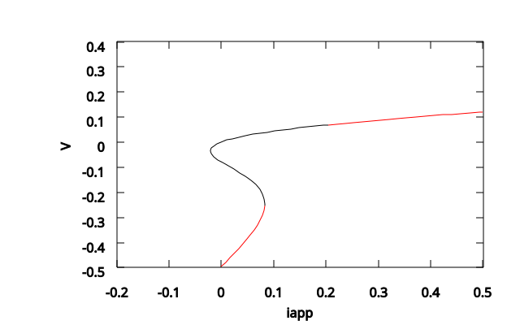

pyauto-xpp: usage and examples
pyauto-xpp runs XPPAUT 8.2 and its own AUTO from Python, for batch work and Python workflows. Every example below was run with the package when this page was built (docs/usage/build_usage.py); the output under each example is what it printed, and each figure is what it saved. The import name is pyxpp.
Contents#
- Getting started
- Writing models with ModelBuilder
- Parameters, initial conditions and options
- Integrating and reading the data
- Run conditions as data:
Run - Phase plane: nullclines, equilibria, direction fields
- Every XPP button from Python
- XPP's own graphics, and checking them against the data
- Analysis tools in nUmerics
- AUTO I: one-parameter diagrams
- AUTO II: two-parameter curves
- AUTO III: branch points, periodic starts, period doubling, maps
- AUTO IV: many initial conditions, files and buttons
- Errors, limits and tips
- The XPP inside: versions and what each source drop changed
Getting started#
Build and install. The package compiles XPP 8.2 (with AUTO) into a shared library the first time it is built. Only a C compiler is needed; X11 is not.
cd pyauto-xpp
python build_lib.py # builds pyxpp/_libxpp.so
pip install -e . # or: put pyauto-xpp on PYTHONPATH
python -m pytest tests -q # 20 testsLoad a model. pyxpp.load reads an .ode file exactly as XPP does, including its @ options, set blocks and AUTO settings. The Morris-Lecar file shipped with the package is used in many examples below.
from pathlib import Path
import pyxpp
PKG = Path(pyxpp.__file__).resolve().parents[1] # the pyauto-xpp folder (examples/lecar.ode is in it)
LECAR = PKG / "examples" / "lecar.ode"
m = pyxpp.load(LECAR)
print(m)
print("variables:", m.vars)
print("auxiliary:", m.aux)
print("columns of the data:", m.columns)
print("parameters:", m.par_names)<pyxpp.Model lecar.ode: vars=['V', 'W'] aux=['CUR', 'ICA', 'IK', 'RATE'] pars=12>
variables: ['V', 'W']
auxiliary: ['CUR', 'ICA', 'IK', 'RATE']
columns of the data: ['t', 'V', 'W', 'CUR', 'ICA', 'IK', 'RATE']
parameters: ['iapp', 'phi', 'v1', 'v2', 'v3', 'v4', 'gca', 'vk', 'vl', 'gk', 'gl', 'om']Names are kept as XPP stores them (upper case), but every lookup in the package ignores case: m.pars["iapp"], tr["v"] and tr["V"] all work.
A model from text. text= takes the contents of an .ode file; it is written into the model's working folder and loaded from there.
vdp = pyxpp.load(text="""
# van der Pol oscillator
x'=y
y'=-x+mu*(1-x^2)*y
par mu=1
init x=2,y=0
@ total=50,dt=0.01
done
""")
print(vdp, vdp.path.name)<pyxpp.Model model.ode: vars=['X', 'Y'] aux=[] pars=1> model.odeWorking folder. Each model has a folder where XPP reads and writes its files (.set files, AUTO's files, SVGs, ...). By default it is a new temporary folder; workdir= chooses it. Every call that writes files runs with this folder as the current directory, so relative file names land there.
from pathlib import Path
w = pyxpp.load(LECAR, workdir="lecar_work")
print(w.workdir.resolve().relative_to(Path.cwd()))
print(sorted(p.name for p in w.workdir.iterdir()))lecar_work
['.pyxpp']Several models at once. Each model runs in its own private copy of the XPP library (XPP keeps all its state in C global variables), so models in one Python process do not interfere.
m.pars["iapp"] = 0.05
print("lecar iapp =", m.pars["iapp"], " vdp has iapp?", "iapp" in vdp.pars)
print("vdp mu =", vdp.pars["mu"], " lecar has mu?", "mu" in m.pars)lecar iapp = 0.05 vdp has iapp? False
vdp mu = 1.0 lecar has mu? FalseXPP's messages. By default (quiet=True) everything XPP and AUTO print is collected in m.log instead of the terminal. quiet=False lets it through.
vdp.run()
print(vdp.log.strip().splitlines()[-3:])['Used 7 constants and 109 symbols ', 'XPPAUT 8.2.2 Copyright (C) 2002-now Bard Ermentrout ', 'TrueColor visual: no colormap needed']Command-line options. args= passes XPP's command-line flags, e.g. -setfile to read a .set file at start (parameters, initial data and numerics saved by File > Write set).
w.set(iapp=0.08, total=150)
w.buttons.file.write_set("start.set") # save this state (see the buttons section)
w2 = pyxpp.load(LECAR, workdir="lecar_work", args=["-setfile", "start.set"])
print(w2.pars["iapp"], w2.numerics["total"])0.08 150.0Closing. m.close() unloads the library copy and frees its memory. A model that is no longer referenced is also freed.
for model in (w, w2):
model.close()
print("closed")closedWriting models with ModelBuilder#
ModelBuilder writes an .ode file one statement at a time from Python. Statements come out in the order the methods are called, because order matters in an .ode file. render() shows the text, write() saves it, and load() saves it and loads it into XPP in one step.
from pyxpp.builder import ModelBuilder
ml = (ModelBuilder("lecar")
.comment("Morris-Lecar")
.parameter(iapp=0.1, phi=0.333)
.parameter(v1=-0.01, v2=0.15, v3=0.1, v4=0.145, gca=1)
.parameter(vk=-0.7, vl=-0.5, gk=2.0, gl=0.5)
.function("minf(v)", ".5*(1+tanh((v-v1)/v2))")
.function("ninf(v)", ".5*(1+tanh((v-v3)/v4))")
.function("lamn(v)", "phi*cosh((v-v3)/(2*v4))")
.fixed("ica", "gca*minf(v)*(v-1)")
.ode("v", "iapp+gl*(vl-v)+gk*w*(vk-v)-ica")
.ode("w", "lamn(v)*(ninf(v)-w)")
.initial(v=-0.3, w=0)
.aux("ica", "ica")
.option(total=100, dt=0.05, xp="v", yp="w", xlo=-0.6, xhi=0.6, ylo=-0.1, yhi=0.6)
.parameter_set("hopf", v3=0, v4=0.3, gca=1.1, phi=0.2)
.tutorial("{iapp=0.1,total=200} Integrate and see the limit cycle.")
.notes("Free text after done is ignored by XPP."))
print(ml.render())# Morris-Lecar
par iapp=0.1,phi=0.333
par v1=-0.01,v2=0.15,v3=0.1,v4=0.145,gca=1
par vk=-0.7,vl=-0.5,gk=2.0,gl=0.5
minf(v)=.5*(1+tanh((v-v1)/v2))
ninf(v)=.5*(1+tanh((v-v3)/v4))
lamn(v)=phi*cosh((v-v3)/(2*v4))
ica=gca*minf(v)*(v-1)
v'=iapp+gl*(vl-v)+gk*w*(vk-v)-ica
w'=lamn(v)*(ninf(v)-w)
init v=-0.3,w=0
aux ica=ica
@ total=100,dt=0.05,xp=v,yp=w,xlo=-0.6,xhi=0.6,ylo=-0.1,yhi=0.6
set hopf {v3=0,v4=0.3,gca=1.1,phi=0.2}
" {iapp=0.1,total=200} Integrate and see the limit cycle.
done
Free text after done is ignored by XPP.m = ml.load("lecar_built.ode") # write + pyxpp.load
tr = m.run()
print(m, " v at the end:", round(tr["v"][-1], 4))
print("the @ options written:", ml.options())<pyxpp.Model lecar_built.ode: vars=['V', 'W'] aux=['ICA'] pars=11> v at the end: -0.2687
the @ options written: {'total': '100', 'dt': '0.05', 'xp': 'v', 'yp': 'w', 'xlo': '-0.6', 'xhi': '0.6', 'ylo': '-0.1', 'yhi': '0.6'}Where the files go. ModelBuilder(name, outdir="output") puts the .ode file (output/<name>.ode) and XPP's working folder (its .set files, SVGs, AUTO files) in one folder, created if missing. Without outdir the .ode file goes to the current folder and each model gets a fresh temporary working folder; write(path) / load(path, workdir=...) choose them yourself (missing folders are created).
mo = ModelBuilder("decay_out", outdir="output").ode("x", "-x").initial(x=1)
md_ = mo.load()
md_.buttons.file.write_set("run.set")
print(md_.path.parent.name, "/", md_.path.name, " workdir:", md_.workdir.name,
" files:", sorted(p.name for p in md_.workdir.iterdir() if not p.name.startswith(".")))output / decay_out.ode workdir: output files: ['decay_out.ode', 'run.set']Numbers and derived quantities. number is a constant that is not a parameter; derived (!name=...) is recomputed whenever a parameter changes; initial_value writes x(0)=.... XPP takes a number there for a single variable (a formula such as exp(1) gives 0), and a formula in [j] for an array.
import math
b = (ModelBuilder("decay")
.number(k0=2)
.parameter(tau=5)
.derived("rate", "k0/tau")
.ode("x", "-rate*x")
.initial_value("x", 2.5)
.ode("y[1..3]", "-y[j]")
.initial_value("y[1..3]", "[j]*2")
.option(total=5))
print(b.render())
d = b.load("decay.ode")
tr = d.run()
print("x(0) =", tr["x"][0], " x(5) =", round(float(tr["x"][-1]), 5), " exact 2.5*exp(-2) =", round(2.5 * math.exp(-2), 5))
print("y(0) =", [float(tr[f"y{i}"][0]) for i in (1, 2, 3)])number k0=2
par tau=5
!rate=k0/tau
x'=-rate*x
x(0)=2.5
y[1..3]'=-y[j]
y[1..3](0)=[j]*2
@ total=5
done
x(0) = 2.5 x(5) = 0.33834 exact 2.5*exp(-2) = 0.33834
y(0) = [2.0, 4.0, 6.0]Maps (difference equations) use map() and the discrete method.
lm = (ModelBuilder("logistic")
.parameter(r=3.2)
.map("x", "r*x*(1-x)")
.initial(x=0.2)
.option(meth="discrete", total=200))
tr = lm.load("logistic.ode").run()
print("last four iterates:", [round(float(v), 4) for v in tr["x"][-4:]], " (a 2-cycle)")last four iterates: [0.513, 0.7995, 0.513, 0.7995] (a 2-cycle)Arrays. XPP's name[lo..hi] notation expands to one equation per index; [j] is the index as a number and u[j] the variable. Names that are not Python keywords are passed as a dict.
chain = (ModelBuilder("chain")
.parameter(d=0.5)
.ode("u[1..5]", "-u[j]+d*[j]")
.initial({"u[1..5]": 1})
.option(total=3))
print(chain.render())
c = chain.load("chain.ode")
print(c.vars, " u5(3) =", round(float(c.run()["u5"][-1]), 4), " exact:", round(2.5 + (1 - 2.5) * __import__("math").exp(-3), 4))par d=0.5
u[1..5]'=-u[j]+d*[j]
init u[1..5]=1
@ total=3
done
['U1', 'U2', 'U3', 'U4', 'U5'] u5(3) = 2.4253 exact: 2.4253Repeated blocks. begin_block("1..3") ... end_block() repeats the statements between them with [j] replaced by 1, 2, 3.
blk = (ModelBuilder("blocks")
.begin_block("1..3")
.ode("x[j]", "-[j]*x[j]")
.initial({"x[j]": 1})
.end_block()
.option(total=1))
print(blk.render())
tr = blk.load("blocks.ode").run()
print("x1, x2, x3 at t=1:", [round(float(tr[f"x{i}"][-1]), 5) for i in (1, 2, 3)],
" exact:", [round(math.exp(-i), 5) for i in (1, 2, 3)])%[1..3]
x[j]'=-[j]*x[j]
init x[j]=1
%
@ total=1
done
x1, x2, x3 at t=1: [0.36788, 0.13534, 0.04979] exact: [0.36788, 0.13534, 0.04979]Events. global_event(sign, condition, actions) resets variables when a quantity crosses zero (here an integrate-and-fire neuron).
lif = (ModelBuilder("lif")
.parameter(I=1.5, vth=1, vreset=0)
.ode("v", "-v+I")
.global_event(1, "v-vth", {"v": "vreset"})
.aux("spike", "v")
.option(total=10, dt=0.001))
tr = lif.load("lif.ode").run()
resets = tr.t[1:][tr["v"][1:] < tr["v"][:-1] - 0.5] # v drops at each reset
print("max v =", round(float(tr["v"].max()), 4), " period:", round(float(resets[1] - resets[0]), 3),
" exact ln(1.5/0.5) =", round(math.log(3), 3))max v = 1.0 period: 1.099 exact ln(1.5/0.5) = 1.099Noise and Markov chains. wiener adds white noise; markov defines a discrete state with transition rates (row k: rates out of state k).
sde = (ModelBuilder("ou")
.parameter(sig=0.3)
.wiener("w")
.ode("x", "-x+sig*w")
.option(total=2000, dt=0.01, meth="euler"))
tr = sde.load("ou.ode").run()
print("OU: variance of x =", round(float(tr["x"][2000:].var()), 4), " theory sig^2/2 =", 0.3 ** 2 / 2)
chan = (ModelBuilder("channel")
.parameter(a=1, b=2)
.markov("z", [["0", "a"], ["b", "0"]])
.ode("q", "z-q")
.option(total=5000, dt=0.01))
tr = chan.load("channel.ode").run()
print("two-state channel: fraction open =", round(float(tr["z"].mean()), 3), " theory a/(a+b) =", round(1 / 3, 3))OU: variance of x = 0.047 theory sig^2/2 = 0.045
two-state channel: fraction open = 0.336 theory a/(a+b) = 0.333Tables, DAEs, integral equations, boundary conditions, special operators. All are written as XPP expects them:
table(name, n=, lo=, hi=, expr=)a tabulated function (ortable(name, file));algebraic+solvefor a differential-algebraic system;volterrafor an integral equation (int{...});boundaryfor a boundary-value problem;specialforconv,sparse,mmult, ... ;export,only,rawfor the rest.
dae = (ModelBuilder("dae")
.table("sq", n=101, lo=0, hi=2, expr="t^2")
.ode("x", "-x+y")
.solve("y", 1)
.algebraic("y^3+y-x-sq(1)")
.aux("yy", "y") # a solv variable is not stored; aux keeps it
.initial(x=0)
.option(total=2))
tr = dae.load("dae.ode").run()
y, x = tr["yy"][-1], tr["x"][-1]
print("DAE: y^3+y-x-1 at the end =", f"{y**3 + y - x - 1:.1e}")
volt = (ModelBuilder("volterra")
.volterra("u", "1-int{exp(-t)#u}")
.option(total=2, meth="volterra", dt=0.01))
print(volt.render())
tr = volt.load("volt.ode").run()
print("Volterra: u(2) =", round(tr["u"][-1], 5), " exact 1/2+exp(-4)/2 =", round(0.5 + 0.5 * __import__("math").exp(-4), 5))
bvp = (ModelBuilder("bvp")
.ode("x", "y")
.ode("y", "-x")
.boundary("x")
.boundary("x'-1")
.option(total=1.5707963))
print(bvp.render())
conv = (ModelBuilder("conv")
.table("w", n=11, lo=-5, hi=5, expr="exp(-abs(t))")
.ode("u[0..20]", "-u[j]+k([j])") # network values are k(0), k(1), ...
.special("k", "conv(even,21,5,w,u0)")
.initial({"u[0..20]": 0.1})
.only("u0", "u10")
.raw("# raw() writes any line as it is")
.option(total=1))
print(conv.render())
print("loads:", conv.load("conv.ode").vars[:3], "...")DAE: y^3+y-x-1 at the end = 2.7e-06
volt u=1-int{exp(-t)#u}
@ total=2,meth=volterra,dt=0.01
done
Volterra: u(2) = 0.50916 exact 1/2+exp(-4)/2 = 0.50916
x'=y
y'=-x
bndry x
bndry x'-1
@ total=1.5707963
done
table w % 11 -5 5 exp(-abs(t))
u[0..20]'=-u[j]+k([j])
special k=conv(even,21,5,w,u0)
init u[0..20]=0.1
only u0,u10
# raw() writes any line as it is
@ total=1
done
loads: ['U0', 'U1', 'U2'] ...Statements written so far. lines holds them; raw_count counts the raw() lines (a model that needs raw() shows a gap in the builder).
print(len(conv.lines), "lines, raw:", conv.raw_count, " ", repr(conv))7 lines, raw: 1 <ModelBuilder conv: 7 lines>Parameters, initial conditions and options#
m.pars and m.ics behave like dictionaries (names in any case).
from pathlib import Path
import pyxpp
PKG = Path(pyxpp.__file__).resolve().parents[1] # the pyauto-xpp folder (examples/lecar.ode is in it)
m = pyxpp.load(PKG / "examples" / "lecar.ode")
print(m.pars)
print(m.ics)
m.pars["iapp"] = 0.08
m.ics["v"] = -0.3
m.pars.update(gca=1.1, phi=0.25)
print(m.pars["IAPP"], m.ics["V"], "gca" in m.pars, list(m.ics.keys()))
print(m.pars.as_dict()["gca"], dict(m.ics.items()))parameters(iapp=0, phi=0.333, v1=-0.01, v2=0.15, v3=0.1, v4=0.145, gca=1, vk=-0.7, vl=-0.5, gk=2, gl=0.5, om=1)
initial conditions(V=0, W=0)
0.08 -0.3 True ['V', 'W']
1.1 {'V': -0.3, 'W': 0.0}set() does all three at once: each name is tried as a parameter, then as a variable (initial condition), then as an @ option, exactly as it would be written on an @ line.
m.set(iapp=0.1, v=-0.25, w=0.05, total=250, dt=0.02, meth="rk4", maxstor=50000)
print(m.numerics){'total': 250.0, 'dt': 0.02, 't0': 0.0, 'trans': 0.0, 'nout': 1, 'bound': 100.0, 'meth': 'rungekutta', 'tol': 0.001, 'atol': 0.001, 'dtmin': 1e-12, 'dtmax': 1.0, 'maxstor': 50000, 'delay': 0.0, 'newt_tol': 0.001, 'jac_eps': 0.001, 'newt_iter': 100, 'poimap': 0}set_option(name, value) is the @-option part on its own; get(name) reads any parameter, initial condition or derived quantity.
m.set_option("bounds", 1000)
m.set_option("nout", 2)
print("bound:", m.numerics["bound"], " nout:", m.numerics["nout"], " get('phi'):", m.get("phi"), " get('v'):", m.get("v"))bound: 1000.0 nout: 2 get('phi'): 0.25 get('v'): -0.25Integration methods. meth= takes XPP's names and some aliases:
from pyxpp.model import METHODS, method_key
print(METHODS)
for name in ("rk4", "cvode", "dopri5", "stiff", "euler", "discrete", "gear", "rosen23", "symplectic"):
m.set(meth=name)
print(f"{name:10s} -> key {method_key(name)!r} -> {m.numerics['meth']}")['discrete', 'euler', 'modeuler', 'rungekutta', 'adams', 'gear', 'volterra', 'backeul', 'qualrk', 'stiff', 'cvode', '5dp', '83dp', '2rb', 'ymp']
rk4 -> key 'r' -> rungekutta
cvode -> key 'c' -> cvode
dopri5 -> key '5' -> 5dp
stiff -> key 's' -> stiff
euler -> key 'e' -> euler
discrete -> key 'd' -> discrete
gear -> key 'g' -> gear
rosen23 -> key '2' -> 2rb
symplectic -> key 'y' -> ympParameter sets written in the file as set name {...} are chosen with File > Get par set (here hopf from lecar.ode).
m.buttons.file.get_par_set("hopf")
print({k: m.pars[k] for k in ("v3", "v4", "gca", "phi")}){'v3': 0.0, 'v4': 0.3, 'gca': 1.1, 'phi': 0.2}Integrating and reading the data#
m.run() is Initialconds > Go: it integrates from the current initial conditions with the current numerics and returns the data browser as a Trajectory. Keyword arguments go through set() first.
import numpy as np
import matplotlib.pyplot as plt
from pathlib import Path
import pyxpp
PKG = Path(pyxpp.__file__).resolve().parents[1] # the pyauto-xpp folder (examples/lecar.ode is in it)
m = pyxpp.load(PKG / "examples" / "lecar.ode")
tr = m.run(iapp=0.1, total=200, dt=0.05)
print(tr)
print("rows:", len(tr), " columns:", tr.names)
print("t:", tr.t[:3], "...", tr.t[-1])
print("v (any case):", tr["v"][:3], tr["V"][:3])
print("as numpy:", tr.array.shape, tr.array.dtype)
print(tr.to_pandas().describe().loc[["min", "max"]].round(4))<Trajectory 4001 rows x ['t', 'V', 'W', 'CUR', 'ICA', 'IK', 'RATE']>
rows: 4001 columns: ['t', 'V', 'W', 'CUR', 'ICA', 'IK', 'RATE']
t: [0. 0.05 0.1 ] ... 200.0
v (any case): [0. 0.02012537 0.0420657 ] [0. 0.02012537 0.0420657 ]
as numpy: (4001, 7) float64
t V W CUR ICA IK RATE
min 0.0 -0.3817 0.0000 0.1 -0.7612 0.0000 0.333
max 200.0 0.2831 0.4274 0.1 -0.0097 0.6935 0.333Auxiliary quantities (aux lines) are columns too. The data are what XPP stored: single precision, every nout-th step, after trans.
fig, ax = plt.subplots(1, 2, figsize=(10, 3.2))
ax[0].plot(tr.t, tr["v"], label="v")
ax[0].plot(tr.t, tr["ik"] / 10, label="ik / 10 (aux)")
ax[0].set_xlabel("t"); ax[0].legend()
ax[1].plot(tr["v"], tr["w"]); ax[1].set(xlabel="v", ylabel="w")
fig.tight_layout(); fig.savefig(FIG / "lecar_run.png", dpi=110)
Carrying on.
run_last(): Initialconds > Last, start again from the end of the last run (time starts again att0);- Initialconds > Shift: the same, but time carries on (it sets
t0); continue_run(T): Continue, extend the current run until time T (the data then hold the whole run);last_point(): the final state as a dict.
a = m.run(total=50)
b = m.run_last(total=50)
print("run_last starts at the end of the last run:", np.allclose(b.array[0, 1:3], a.array[-1, 1:3]),
" (b starts at t =", b.t[0], ")")
m.buttons.initialconds.shift()
print("shift: t from", m.data.t[0], "to", m.data.t[-1], " t0 is now", round(m.numerics["t0"], 6))
m.set(t0=0)
c = m.continue_run(120)
print("continue_run: t from", c.t[0], "to", c.t[-1])
print("last_point:", m.last_point())run_last starts at the end of the last run: True (b starts at t = 0.0 )
shift: t from 50.0 to 100.0 t0 is now 50.0
continue_run: t from 50.0 to 120.0
last_point: {'V': -0.37925341725349426, 'W': 0.09480996429920197}Transient, output step and start time. trans drops the first part, nout stores every n-th step, t0 sets the starting time.
tr = m.run(total=100, trans=80, nout=4, t0=0)
print("first stored t:", tr.t[0], " step between rows:", tr.t[1] - tr.t[0], " rows:", len(tr))
m.set(trans=0, nout=1)first stored t: 80.19999694824219 step between rows: 0.20000457763671875 rows: 100Sweeps. sweep(name, values) runs once per value of a parameter or an initial condition, and puts the old value back afterwards.
fig, ax = plt.subplots(figsize=(7, 3))
currents = [0.06, 0.08, 0.1, 0.2]
for I, run in zip(currents, m.sweep("iapp", currents, total=150)):
ax.plot(run.t, run["v"], lw=1, label=f"iapp={I}")
ax.legend(fontsize=7); ax.set_xlabel("t")
fig.tight_layout(); fig.savefig(FIG / "sweep.png", dpi=110)
print("iapp after the sweep:", m.pars["iapp"])
starts = m.sweep("v", [-0.4, 0.0, 0.3], total=30, iapp=0)
print("end v from three starts:", [round(float(r["v"][-1]), 4) for r in starts])iapp after the sweep: 0.1
end v from three starts: [-0.4956, -0.4956, -0.4956]
XPP's own range integration. Initialconds > Range (a dialog, answered with a dict) integrates over a range in one go. With "Reset storage" = N the runs are stored one after the other.
m.set(total=40, iapp=0.0)
m.buttons.initialconds.range({"Range over": "iapp", "Steps": 4, "Start": 0.05,
"End": 0.25, "Reset storage (Y/N)": "N"})
print(m.transcript)
d = m.data
print("stored rows:", len(d), "= 5 runs x", len(d) // 5)menu Integrate -> (R)ange
field Range Integrate.Range over = iapp (was V)
field Range Integrate.Steps = 4 (was 20)
field Range Integrate.Start = 0.05 (was 0)
field Range Integrate.End = 0.25 (was 1)
field Range Integrate.Reset storage (Y/N) = N (was Y)
stored rows: 4005 = 5 runs x 801Other ways to start. Initialconds > Periodic (XPP 8.1) gives exactly one period of a stable orbit (see "Analysis tools"); New asks for each initial value; Backward integrates backwards in time (here it stops when ik passes XPP's bound, as in the GUI).
m.set(total=20, iapp=0.0)
m.buttons.initialconds.new(-0.1, 0.02)
print("new ICs:", m.ics.as_dict())
back = m.buttons.initialconds.backward()
print("backward run: t from", m.data.t[0], "to", m.data.t[-1])new ICs: {'V': -0.1, 'W': 0.02}
backward run: t from 0.0 to -8.449999809265137Methods compared. A stiff solver with tolerances (CVODE through its button, which asks for the tolerances) against fixed-step RK4.
m.set(total=200, dt=0.05, iapp=0.1, v=-0.3, w=0)
rk = m.run(meth="rk4")
m.buttons.numerics.method.cvode(1e-10, 1e-10)
cv = m.run()
print(m.numerics["meth"], " largest |v_rk4 - v_cvode| =", f"{np.abs(rk['v'] - cv['v']).max():.2e}")cvode largest |v_rk4 - v_cvode| = 5.23e-06Run conditions as data: Run#
m.run(total=..., iapp=...) changes the model and the change stays. A Run keeps how to integrate apart from the model: numerics, the method and its settings, parameters, initial conditions, any other @ option. Applying a Run changes the model for that run only; afterwards it is as it was. Fields left out keep the model's own values.
from pathlib import Path
import numpy as np
import matplotlib.pyplot as plt
import pyxpp
from pyxpp import Run
PKG = Path(pyxpp.__file__).resolve().parents[1] # the pyauto-xpp folder (examples/lecar.ode is in it)
m = pyxpp.load(PKG / "examples" / "lecar.ode")
before = m.snapshot()
base = Run(total=200, dt=0.05, meth="rk4", name="rest")
spiking = base.with_pars(iapp=0.1).with_ics(v=-0.3, w=0).replace(name="spiking")
stiff = spiking.replace(meth="cvode", tol=1e-10, atol=1e-10, name="spiking, cvode")
late = spiking.replace(trans=150, nout=4, name="spiking, last 50, every 4th step")
print(spiking)Run(total=200, dt=0.05, meth='rk4', pars={'iapp': 0.1}, ics={'v': -0.3, 'w': 0}, name='spiking')run_many runs each one; every result carries the Run that made it.
trs = m.run_many([base, spiking, stiff, late])
for t in trs:
print(f"{t.run.name:32s} rows {len(t):5d} t {t.t[0]:6.1f} .. {t.t[-1]:6.1f} max v {t['v'].max():+.4f}")
print("model unchanged:", m.snapshot() == before)
print("rk4 against cvode (1e-10), largest |dv|:", f"{np.abs(trs[1]['v'] - trs[2]['v']).max():.1e}")
fig, ax = plt.subplots(figsize=(8, 3))
for t in trs:
ax.plot(t.t, t["v"], lw=1, label=t.run.name)
ax.legend(fontsize=7); ax.set_xlabel("t"); ax.set_ylabel("v")
fig.tight_layout(); fig.savefig(FIG / "runs.png", dpi=100)rest rows 4001 t 0.0 .. 200.0 max v +0.2407
spiking rows 4001 t 0.0 .. 200.0 max v +0.2615
spiking, cvode rows 4001 t 0.0 .. 200.0 max v +0.2615
spiking, last 50, every 4th step rows 250 t 150.2 .. 200.0 max v +0.2615
model unchanged: True
rk4 against cvode (1e-10), largest |dv|: 5.2e-06
Variants. replace(...) changes fields (and replaces pars, ics, options whole); with_pars, with_ics, with_options add to them. start="last" continues from the end of the previous run (Initialconds > Last). Run.from_model(m) captures the model's current settings.
a = m.run(spiking)
b = m.run(spiking.replace(start="last"))
print("continues where the last run ended:", np.allclose(b.array[0, 1:3], a.array[-1, 1:3]))
print(Run.from_model(m).replace(pars={}, ics={}))continues where the last run ended: True
Run(total=30.0, dt=0.05, meth='rungekutta', t0=0.0, trans=0.0, nout=1, bound=100.0, tol=0.001, atol=0.001, dtmin=1e-12, dtmax=1.0, delay=0.0)One-off settings without a Run. keep=False makes keyword settings apply to one run only (they are sorted into parameters, initial conditions, numerics and other options, and the result gets the Run); m.using(...) does the same for a block of runs.
t = m.run(total=50, iapp=0.1, v=-0.2, meth="cvode", keep=False)
print(t.run, " unchanged:", m.snapshot() == before)
with m.using(stiff):
first = m.run()
more = m.run_last()
print("inside:", m.numerics["meth"], m.pars["iapp"])
print("after:", m.numerics["meth"], m.pars["iapp"], " unchanged:", m.snapshot() == before)Run(total=50, meth='cvode', pars={'iapp': 0.1}, ics={'v': -0.2}) unchanged: True
inside: cvode 0.1
after: rungekutta 0.0 unchanged: TrueSaving runs. A Run is saved as JSON and loaded back, so a set of runs can live next to the results it produced. (Adaptive methods store every step: XPP sets nout to 1 for cvode, dopri, stiff, gear, rosen23.)
p = stiff.save("runs/spiking_cvode.json")
print(p.read_text())
print("loaded back equal:", Run.load(p) == stiff){
"total": 200,
"dt": 0.05,
"meth": "cvode",
"tol": 1e-10,
"atol": 1e-10,
"pars": {
"iapp": 0.1
},
"ics": {
"v": -0.3,
"w": 0
},
"start": "ics",
"name": "spiking, cvode"
}
loaded back equal: TruePhase plane: nullclines, equilibria, direction fields#
nullclines() asks XPP to compute the nullclines in a 2D view and returns them as arrays of (x, y) points, with NaN rows between separate pieces. The key is the variable whose right-hand side is zero.
import numpy as np
import matplotlib.pyplot as plt
from pathlib import Path
import pyxpp
PKG = Path(pyxpp.__file__).resolve().parents[1] # the pyauto-xpp folder (examples/lecar.ode is in it)
m = pyxpp.load(PKG / "examples" / "lecar.ode")
m.pars["iapp"] = 0.05
nc = m.nullclines(x="v", y="w", xlo=-0.6, xhi=0.5, ylo=-0.1, yhi=0.6)
print({k: a.shape for k, a in nc.items()}){'V': (317, 2), 'W': (180, 2)}view() sets the 2D window on its own (Viewaxes > 2D); mesh= refines the grid XPP uses for the nullclines (nUmerics > Ncline ctrl).
m.view(x="v", y="w", xlo=-0.6, xhi=0.5, ylo=-0.1, yhi=0.6)
fine = m.nullclines(mesh=200)
print("points with the default mesh:", len(nc["V"]), " with mesh=200:", len(fine["V"]))points with the default mesh: 317 with mesh=200: 1583Equilibria. equilibrium(guess) is Newton's method (the core of Sing pts > Go) from a guess (a dict, a sequence, or the current initial conditions). It returns the point, its eigenvalues and its stability. At iapp = 0.05 Morris-Lecar has three equilibria.
eqs = []
for guess in ({"v": -0.4, "w": 0.0}, {"v": -0.15, "w": 0.03}, {"v": 0.0, "w": 0.3}):
e = m.equilibrium(guess)
eqs.append(e)
print(e, " eigenvalues:", np.round(e.eigenvalues, 4))<Equilibrium stable V=-0.382505, W=0.00128554> eigenvalues: [-0.4028+0.j -0.8904+0.j]
<Equilibrium unstable V=-0.142534, W=0.0340492> eigenvalues: [ 1.03 +0.j -0.301+0.j]
<Equilibrium unstable V=0.0276105, W=0.269241> eigenvalues: [0.5204+0.7811j 0.5204-0.7811j]The same with the button (Sing pts > Go): XPP asks whether to print the eigenvalues, and puts the result in the log. Sing pts > Monte Carlo searches from many random guesses.
m.ics.update(v=-0.15, w=0.03)
n = len(m.log)
m.buttons.sing_pts.go(True, False) # print eigenvalues: yes; draw strong sets: no
print(m.transcript)
print(m.log[n:].strip())
n = len(m.log)
m.buttons.sing_pts.monte_carlo(0, 0, 200, 1e-3, -0.6, 0.5, -0.1, 0.6)
print(m.log[n:].strip())menu Equilibria -> (G)o
choice Print eigenvalues? (YES/NO) -> YES
choice Draw Invariant Sets? (YES/NO) -> NO
Eigenvalues:
1.029978 + i 0.000000
-0.301007 + i 0.000000
Found: 0
x[0]= 0.0276102 eval= 0.520417 + I 0.781099
x[1]= 0.26924 eval= 0.520417 + I -0.781099
Found: 1
x[0]= -0.382505 eval= -0.402765 + I 0
x[1]= 0.00128561 eval= -0.890364 + I 0
Found: 2
x[0]= -0.142534 eval= 1.02998 + I 0
x[1]= 0.0340493 eval= -0.301007 + I 0Phase portrait from these pieces, with trajectories from a few starts.
fig, ax = plt.subplots(figsize=(6, 4.5))
ax.plot(*fine["V"].T, "C1", label="v' = 0")
ax.plot(*fine["W"].T, "C2", label="w' = 0")
for v0 in (-0.5, -0.3, -0.1, 0.2, 0.4):
tr = m.run(total=150, v=v0, w=0.0)
ax.plot(tr["v"], tr["w"], "k", lw=0.6)
for e in eqs:
ax.plot(e.x["V"], e.x["W"], "o", color="k" if e.stable else "w", mec="k", ms=7)
ax.set(xlim=(-0.6, 0.5), ylim=(-0.1, 0.6), xlabel="v", ylabel="w", title="Morris-Lecar, iapp = 0.05")
ax.legend(fontsize=8)
fig.tight_layout(); fig.savefig(FIG / "phase_plane.png", dpi=110)
Direction field and XPP's own picture. Dir.field/flow draws arrows on a grid; Graphic stuff > SVG writes the window as XPP draws it.
m.buttons.dir_field.direct_field(12)
m.buttons.nullcline.new()
m.buttons.graphic_stuff.svg("pp.svg")
print("XPP wrote", (m.workdir / "pp.svg").stat().st_size, "bytes:", m.transcript.strip().splitlines()[-1])
import shutil
shutil.copy(m.workdir / "pp.svg", FIG / "xpp_phase_plane.svg")XPP wrote 308675 bytes: file Print svg (*.svg) -> pp.svg
Equilibria along a parameter without AUTO: Sing pts > Range follows the equilibrium found from the current initial data as a parameter changes, and stores the results in the data browser: column t holds the parameter, then the equilibrium.
m.ics.update(v=-0.4, w=0.0)
m.buttons.sing_pts.range({"Range over": "iapp", "Steps": 20, "Start": 0, "End": 0.06})
d = m.data
print(d)
print("iapp, v, w:")
print(np.round(d.array[::5, :3], 5))<Trajectory 21 rows x ['t', 'V', 'W', 'CUR', 'ICA', 'IK', 'RATE']>
iapp, v, w:
[[ 0.0000e+00 -4.9562e-01 2.7000e-04]
[ 1.5000e-02 -4.6349e-01 4.2000e-04]
[ 3.0000e-02 -4.3021e-01 6.7000e-04]
[ 4.5000e-02 -3.9496e-01 1.0800e-03]
[ 6.0000e-02 -3.5588e-01 1.8600e-03]]Every XPP button from Python#
m.buttons mirrors XPP's main window menu by menu, with XPP's keyboard shortcuts; m.auto.buttons mirrors the AUTO window. pyxpp.show prints a tree (here the start of it; the whole tree has about 230 buttons).
import io
import contextlib
import warnings
from pathlib import Path
import pyxpp
PKG = Path(pyxpp.__file__).resolve().parents[1] # the pyauto-xpp folder (examples/lecar.ode is in it)
m = pyxpp.load(PKG / "examples" / "lecar.ode")
buf = io.StringIO()
with contextlib.redirect_stdout(buf):
pyxpp.show(m.buttons)
tree = buf.getvalue().splitlines()
print("\n".join(tree[:22]))
print(f"... {len(tree)} lines in all")
print(m.buttons.numerics.method, " ", m.buttons.numerics.method.cvode)initialconds [I] Integrate the equations
range [R] Integrate over a range of parameters, init data, etc
two_par_range [2] Integrate over range of 2 parameters, init data, etc
last [L] Pick up from last step of previous solution
old [O] Use current initial data
go [G] Use current initial data
mouse [M] Specify initial data with mouse (answer: 'ix,iy' pixels)
shift [S] Pick up from last step and shift T to latest time
new [N] Input new initial data, one prompt per variable
shoot [H] Use the initial data from last shooting from fixed pt
file [F] Read init data from file
formula [U] Type in function of 't' for t^th equation
mice [I] Repeated ICs using mouse
dae_guess [D] Guess new values for DAE
backward [B] Integrate backwards
periodic [P] XPP 8.1: one period of the stable orbit, from its peak
continue_ [C] Continue integration for specified time
nullcline [N] Draw nullclines
new [N] Compute new nullclines
restore [R] Redraw last nullclines
auto [A] Set automatic redraw
manual [M] Only redraw when asked
... 209 lines in all
<menu 'Method': discrete, euler, mod_euler, runge_kutta, adams, gear, volterra, backeul, qualst_rk4, stiff, cvode, dopri5, dopri83, rosen23, symplectic> <button '(C)Vode' keys=M C>Answers. A button's positional arguments answer what XPP asks next, in order:
| XPP asks | give |
|---|---|
| a number or text prompt | the value |
| a menu | the key letter or (the start of) the entry's label |
| a dialog with several fields | a dict {field: value} (fields not given keep their value) |
| a file name | the name (relative to m.workdir) |
| a yes/no question | True / False |
Anything not answered takes XPP's default, as if Enter were pressed. m.transcript shows each question and the answer used.
m.buttons.numerics.total(300) # a prompt
m.buttons.numerics.method("Runge") # a menu, by label
m.buttons.numerics.method("c", 1e-9, 1e-9) # by key; then CVODE's tolerance prompts
print(m.transcript)
m.buttons.viewaxes.two_d({"X-axis": "v", "Y-axis": "w", "Xmin": -0.6, "Xmax": 0.5})
print(m.transcript)menu Method -> (C)Vode
prompt Relative tol: [0.001] -> 1e-09
prompt Abs. Toler: [0.001] -> 1e-09
prompt Banded system(0/1)? [0] -> (default)
menu Axes -> 2D
field 2D View.X-axis = v (was V)
field 2D View.Y-axis = w (was W)
field 2D View.Xmin = -0.6 (was -0.6)
field 2D View.Xmax = 0.5 (was 1.2)Finding out what a button asks. Press it with no answers and read the transcript; a dialog given a wrong field name lists its fields; a menu given a wrong entry lists its entries.
m.buttons.numerics.sing_pt_ctrl()
print(m.transcript)
for call in (lambda: m.buttons.numerics.poincare_map.section({"?": 0}),
lambda: m.buttons.numerics.method("nonsense")):
try:
call()
except pyxpp.XPPError as e:
print("XPPError:", str(e).splitlines()[0])
# A button that fails half way keeps what XPP had already done: here the
# Poincare dialog had already switched the map on, so switch it off again.
m.buttons.numerics.poincare_map.none()prompt Maximum iterates : [100] -> (default)
prompt Newton tolerance : [0.001] -> (default)
prompt Jacobian epsilon : [0.001] -> (default)
XPPError: dialog 'Poincare map' has no field '?' (fields: 'Variable' 'Section' 'Direction (+1,-1,0)' 'Stop on sect(y/n)' )
XPPError: menu 'Method' has no entry 'nonsense' (entries: '(D)iscrete' '(E)uler' '(M)od. Euler' '(R)unge-Kutta' '(A)dams' '(G)ear' '(V)olterra' '(B)ackEul' '(Q)ualst.RK4' '(S)tiff' '(C)Vode' 'DoPri(5)' 'DoPri(8)3' 'Rosen(2)3' 'sYmplectic')Answers that were not asked for give an AnswersNotUsed warning (the button asked less than you thought).
with warnings.catch_warnings(record=True) as w:
warnings.simplefilter("always")
m.buttons.erase("not asked")
print([str(x.category.__name__) for x in w])['AnswersNotUsed']Raw keys. m.press(key, *answers) presses one key in the main window, as typed in XPP; m.press("esc") goes back to the main menu. m.command(id) runs an internal command number (M_* in menudrive.h).
m.press("u") # open nUmerics
m.press("esc")
m.press("i", "g") # Initialconds > Go
print(m.transcript or "(no questions)", " rows:", len(m.data))menu Integrate -> (G)o
rows: 6001m.set(iapp=0.07, total=120)
m.buttons.file.write_set("run1.set") # a new file
m.buttons.file.write_set("run1.set", True) # it exists now: XPP asks "Overwrite?" -> True
m.set(iapp=0.0, total=30)
m.buttons.file.read_set("run1.set")
print("after read_set: iapp =", m.pars["iapp"], " total =", m.numerics["total"])
m.buttons.file.save_info("info.txt")
print((m.workdir / "info.txt").read_text().splitlines()[:8])
m.buttons.file.clone("copy_of_lecar.ode")
print("clone written:", (m.workdir / "copy_of_lecar.ode").exists())
m.buttons.file.calculator("iapp*100", "exp(1)", pyxpp.ESC) # ESC ends the calculator
print(m.transcript)after read_set: iapp = 0.07 total = 120.0
['File: pyauto-xpp/examples/lecar.ode ', '', ' Equations... ', 'dV/dT=(IAPP+GL*(VL-V)+GK*W*(VK-V)-ICA)', 'dW/dT=(LAMN(V)*(NINF(V)-W))', 'CUR=IAPP', 'ICA=ICA', 'IK=GK*W*(V-VK)']
clone written: True
calc iapp*100 = 7.000000000000001
calc exp(1) = 2.718281828459045# Edit > RHS's: a dialog whose fields are dV/dT, dW/dT and the aux names;
# the model changes in place
m.buttons.file.edit.rhs({"dW/dT": "0"})
print(m.transcript.strip())
tr = m.run(total=20, v=-0.3, w=0.1)
print("w stays at 0.1 after editing w' = 0:", tr["w"].min(), tr["w"].max())menu Edit Stuff -> RHS's
field Right Hand Sides.dW/dT = 0 (was (LAMN(V)*(NINF(V)-W)))
w stays at 0.1 after editing w' = 0: 0.10000000149011612 0.10000000149011612Transcript of anything. m.log holds everything XPP and AUTO printed since loading; m.transcript the questions of the last call only.
print(len(m.log.splitlines()), "lines in the log; last:", m.log.strip().splitlines()[-1])54 lines in the log; last: ICA is a duplicate nameXPP's own graphics, and checking them against the data#
XPP still draws everything (into an invisible window). Graphic stuff > SVG and Postscript write what it drew, so a figure can come from XPP itself; pyxpp.plot has helpers that make the matching matplotlib figure and check that XPP's curve and the data agree to the pixel.
import shutil
import matplotlib.pyplot as plt
from pathlib import Path
import pyxpp
PKG = Path(pyxpp.__file__).resolve().parents[1] # the pyauto-xpp folder (examples/lecar.ode is in it)
from pyxpp import plot as xplot
m = pyxpp.load(PKG / "examples" / "lecar.ode")
tr = m.run(iapp=0.1, total=150)
m.buttons.xi_vs_t("v") # Xi vs t: plot v against t
m.buttons.window.fit() # Window > Fit
m.buttons.graphic_stuff.svg("v_vs_t.svg")
m.buttons.graphic_stuff.postscript({"BW-0/Color-1": 1}, "v_vs_t.ps")
print(sorted(p.name for p in m.workdir.glob("v_vs_t.*")))
shutil.copy(m.workdir / "v_vs_t.svg", FIG / "xpp_v_vs_t.svg")['v_vs_t.ps', 'v_vs_t.svg']
More curves in one window. Graphic stuff > Add curve adds a curve (any columns, colour and line type); Freeze keeps the current curve when the next run is drawn; Export data writes the numbers of the curves on the screen.
m.buttons.graphic_stuff.add_curve({"X-axis": "t", "Y-axis": "w", "Color": 2})
m.buttons.window.window({"Y Lo": -0.45, "Y Hi": 0.5})
m.buttons.graphic_stuff.export_data("curves.dat")
print((m.workdir / "curves.dat").read_text().splitlines()[:3])
m.buttons.graphic_stuff.svg("two_curves.svg")
shutil.copy(m.workdir / "two_curves.svg", FIG / "xpp_two_curves.svg")
m.buttons.graphic_stuff.remove_all()['0 0 0 ', '0.05 0.0201254 0.00388237 ', '0.1 0.0420657 0.00855028 ']
3D views. Viewaxes > 3D takes the axes, their ranges, and the 2D window the projected box is drawn in (XLo..YHi, about -2..2 for the whole box), in one dialog; 3d-params sets the viewing angles.
r = pyxpp.load(text="""
x'=-y-z
y'=x+a*y
z'=b+z*(x-c)
par a=0.2,b=0.2,c=5.7
init x=1,y=1,z=0
@ total=200,dt=0.02,trans=100
done
""")
rt = r.run()
r.buttons.viewaxes.three_d({"X-axis": "x", "Y-axis": "y", "Z-axis": "z", "Xmin": -12, "Xmax": 12,
"Ymin": -12, "Ymax": 12, "Zmin": 0, "Zmax": 25,
"XLo": -2, "XHi": 2, "YLo": -2, "YHi": 2})
r.press("r") # Restore: redraw
r.buttons.graphic_stuff.svg("roessler3d.svg")
shutil.copy(r.workdir / "roessler3d.svg", FIG / "xpp_roessler3d.svg")
print(r.transcript.strip().splitlines()[-1])file Print svg (*.svg) -> roessler3d.svgThe helpers in pyxpp.plot. Each makes a matplotlib figure from XPP's data; the xpp_* ones have XPP draw the same view as SVG; compare_* fit XPP's drawn curve to the data and report the largest distance in pixels (rounding to whole pixels alone gives up to about 0.5-1 px).
| helper | does |
|---|---|
window(tr, var) |
t range and y range with a margin |
plot_x_vs_t(tr, var, lim) |
one variable against t |
plot_all_vs_t(tr, names) |
a panel per variable |
plot_projection(tr, x, y) |
y against x |
plot_3d(tr, x, y, z) |
3D trajectory |
xpp_graph(m, var, lim, path) |
XPP's own var-vs-t SVG |
xpp_graph2d(m, x, y, path) / xpp_graph3d(m, x, y, z, path) |
XPP's own 2D / 3D SVG |
compare_with_xpp_graph(tr, var, svg) |
pixel check for var vs t |
compare_curve(tr, cols, svg) |
pixel check for any 2D / 3D view |
lim = xplot.window(tr, "v")
fig, ax = xplot.plot_x_vs_t(tr, "v", lim, title="v against t (matplotlib)")
fig.savefig(FIG / "mpl_v_vs_t.png", dpi=100)
svg = xplot.xpp_graph(m, "v", lim, "check_v.svg")
print("v vs t:", xplot.compare_with_xpp_graph(tr, "v", svg))
fig = xplot.plot_all_vs_t(rt, ["x", "y", "z"], title="Roessler")
fig.savefig(FIG / "mpl_all_vs_t.png", dpi=90)
fig, ax = xplot.plot_3d(rt, "x", "y", "z", title="Roessler")
fig.savefig(FIG / "mpl_3d.png", dpi=90)
svg2 = xplot.xpp_graph2d(r, "x", "y", "check_xy.svg", tr=rt)
svg3 = xplot.xpp_graph3d(r, "x", "y", "z", "check_xyz.svg", tr=rt)
c2 = xplot.compare_curve(rt, ["x", "y"], svg2)
c3 = xplot.compare_curve(rt, ["x", "y", "z"], svg3)
print("x-y view: max", round(c2["max_px"], 2), "px; 3D view: max", round(c3["max_px"], 2), "px")v vs t: {'xpp_points': 3001, 'data_points': 3001, 'max_px': 0.5070497799248415, 'mean_px': 0.33345383586125993, 'ok': True}
x-y view: max 0.51 px; 3D view: max 0.51 px


Analysis tools in nUmerics#
These buttons replace XPP's data browser with their result (a histogram, a spectrum, an adjoint, ...). m.data always shows what the browser shows; nUmerics > stocHast > Data puts the solution back.
Statistics of a column, histogram, Fourier series.
import numpy as np
import matplotlib.pyplot as plt
from pathlib import Path
import pyxpp
PKG = Path(pyxpp.__file__).resolve().parents[1] # the pyauto-xpp folder (examples/lecar.ode is in it)
m = pyxpp.load(PKG / "examples" / "lecar.ode")
S = m.buttons.numerics.stochast
tr = m.run(iapp=0.1, total=400, trans=200, dt=0.05)
S.stat("v") # mean and standard deviation of a column
print(m.transcript.strip().splitlines()[-1], " numpy:", round(float(tr["v"].mean()), 6), round(float(tr["v"].std()), 6))
S.histogram(50, -0.4, 0.3, "v", "") # bins, low, high, variable, condition
h = m.data
print("histogram:", h, " columns t = bin, V = count; total count", int(h["v"].sum()))
S.data() # back to the solution
S.fourier("v")
f = m.data
print("Fourier:", f, " t = frequency, V = cosine, W = sine coefficient")
k = 1 + np.argmax(np.hypot(f["v"][1:], f["w"][1:]))
print("strongest mode: frequency", round(float(f.t[k]), 5), "-> period", round(1 / float(f.t[k]), 3),
"(frequency step 1/200: the run is 200 long)")
S.data()
fig, ax = plt.subplots(1, 2, figsize=(10, 3))
ax[0].bar(h.t, h["v"], width=0.014); ax[0].set(xlabel="v", ylabel="count", title="histogram of v")
ax[1].plot(f.t[:60], np.hypot(f["v"], f["w"])[:60], ".-"); ax[1].set(xlabel="frequency", title="|Fourier coefficient|")
fig.tight_layout(); fig.savefig(FIG / "hist_fourier.png", dpi=100)message Mean=-0.186542 Std. Dev. = 0.180086 numpy: -0.186542 0.180086
histogram: <Trajectory 51 rows x ['t', 'V', 'W', 'CUR', 'ICA', 'IK', 'RATE']> columns t = bin, V = count; total count 4001
Fourier: <Trajectory 1999 rows x ['t', 'V', 'W', 'CUR', 'ICA', 'IK', 'RATE']> t = frequency, V = cosine, W = sine coefficient
strongest mode: frequency 0.06 -> period 16.667 (frequency step 1/200: the run is 200 long)
Largest Liapunov exponent of the current orbit (about 0 on a limit cycle).
S.liapunov(0) # 0: no range over parameters
print(m.transcript.strip().splitlines()[-1])message Maximal exponent is -0.00223792Poincare map. With a section set, XPP stores only the crossings (here v = 0 going up); the times between them are the period.
P = m.buttons.numerics.poincare_map
P.section({"Variable": "v", "Section": 0, "Direction (+1,-1,0)": 1})
cross = m.run(trans=0, total=300)
print(cross, " periods:", np.round(np.diff(cross.t)[-3:], 4))
P.none()<Trajectory 18 rows x ['t', 'V', 'W', 'CUR', 'ICA', 'IK', 'RATE']> periods: [16.4746 16.4744 16.4745]One period of the orbit (XPP 8.1: Initialconds > Periodic). After a run has settled on a stable orbit, Periodic finds the period in double precision, puts the initial condition at the peak of the plotted variable, sets total to the period and trans to 0, and integrates one period. This is the start that AUTO's periodic runs and the adjoint need.
m.run(iapp=0.1, total=300, dt=0.01, trans=0)
m.buttons.xi_vs_t("v") # Periodic starts at the peak of the plotted variable
m.buttons.initialconds.periodic()
print(m.transcript.strip().splitlines()[-1])
orbit = m.data
T = m.numerics["total"]
print(f"total = {T:.6f}, trans = {m.numerics['trans']}, v(0) = {orbit['v'][0]:.6f} = max v {orbit['v'].max():.6f}")
print("XPP's note:", m.log.strip().splitlines()[-1].strip())message Period T=16.4745. Starting at max of V; total set to T
total = 16.474500, trans = 0.0, v(0) = 0.261500 = max v 0.261500
XPP's note: note: T / (dt*njmp) = 1647.45 is not a whole number, so the stored orbit will stop 0.0045 short of one periodAdjoint and interaction function (nUmerics > Averaging) on that one period. XPP 8.1 closes the orbit by Newton steps, normalises the adjoint, and also computes the isostable quantities. Make H asks for the coupling of each equation (v' is the other cell's v).
A = m.buttons.numerics.averaging
n = len(m.log)
A.new_adj()
adj = m.data
print(f"adjoint: {adj}, max of the V component {adj['v'].max():.4f}")
print("\n".join(l.strip() for l in m.log[n:].strip().splitlines()[-4:]))
A.make_h("v'-v", "0") # diffusive coupling through v
H = m.data
print("H:", H, " H(0) =", round(float(H["v"][0]), 5), "(0 for diffusive coupling: in phase, v' - v = 0)")adjoint: <Trajectory 401 rows x ['t', 'V', 'W', 'CUR', 'ICA', 'IK', 'RATE']>, max of the V component 58.7159
Z at phase 0: 1.9602318 3.8400032
isostable: kappa = -0.6065426415, nu = exp(kappa T) = 4.574232013e-05, next multiplier / nu = 0; I.rho = 1 to 2.4e-15, Z.rho = 0 to 7.1e-15
B found, periodic to 3.6e-17
(the grid orbit was closed by Newton steps: closure error 4.32e-09 -> 2.22e-15)
H: <Trajectory 401 rows x ['t', 'V', 'W', 'CUR', 'ICA', 'IK', 'RATE']> H(0) = 0.0 (0 for diffusive coupling: in phase, v' - v = 0)Phase reduction to second order (XPP 8.1, also in Averaging): the isostable response I(t), the Floquet exponent's function rho, the second-order phase correction B(t), and the second-order interaction function H2 of two coupled cells. Each replaces the browser's data; H2 also reports gamma, computed two ways.
curves = {"adjoint Z (V)": (adj.t, adj["v"]), "H": (H.t, H["v"])}
for name, button in (("isostable I (V)", A.isostable), ("Floquet rho (V)", A.floquet_rho),
("B correction (V)", A.b_correction)):
button()
d = m.data
curves[name] = (d.t.copy(), d["v"].copy())
n = len(m.log)
A.h2()
h2 = m.data
curves["H2"] = (h2.t, h2["v"])
print("\n".join(l.strip() for l in m.log[n:].strip().splitlines()))
fig, axs = plt.subplots(2, 3, figsize=(12, 5.5))
for ax, (name, (x, y)) in zip(axs.flat, curves.items()):
ax.plot(x, y); ax.axhline(0, color="0.8", lw=0.8); ax.set_title(name, fontsize=9)
fig.tight_layout(); fig.savefig(FIG / "phase_reduction.png", dpi=100)
A.orbit() # back to the orbitH2 computed (two coupled cells, second order): H2(0)=0, max |H2|=2.018115
g2+g3 = -2 odd(H2); gamma = (g2'(0)+g3'(0))/4 = -0.046242461 (from A: -0.046242462, from Bf: -0.046242461)
Boundary-value problems (Bndryval): bndry lines give the conditions (x is the value at the start, x' at the end). Here x'' = -x with x(0) = 0, x(pi/2) = 1, whose solution is sin t: the shooting finds y(0) = 1.
b = pyxpp.load(text="""
x'=y
y'=-x
bndry x
bndry x'-1
init x=0,y=0.3
@ total=1.5707963,dt=0.01
done
""")
b.buttons.bndryval.show()
bt = b.data
print("y(0) =", round(float(bt["y"][0]), 6), " x(pi/2) =", round(float(bt["x"][-1]), 6),
" largest |x - sin t| =", f"{np.abs(bt['x'] - np.sin(bt.t)).max():.1e}")y(0) = 1.0 x(pi/2) = 1.0 largest |x - sin t| = 3.4e-07Delay equations. delay(x, tau) needs the maximum delay in the delay option. x' = -x(t - tau) is stable for tau < pi/2 and oscillates with growing amplitude beyond.
d = pyxpp.load(text="""
x'=-delay(x,tau)
par tau=1
init x=1
@ delay=5,total=60,dt=0.01
done
""")
fig, ax = plt.subplots(figsize=(7, 2.8))
for tau in (1.0, 1.5, 1.65):
run = d.run(tau=tau)
ax.plot(run.t, run["x"], label=f"tau = {tau}")
print(f"tau = {tau}: |x| at the end {abs(float(run['x'][-1])):.3g}")
ax.legend(); ax.set_xlabel("t"); fig.tight_layout(); fig.savefig(FIG / "delay.png", dpi=100)tau = 1.0: |x| at the end 1.76e-09
tau = 1.5: |x| at the end 0.272
tau = 1.65: |x| at the end 1.51
Many noisy runs. stocHast > Compute repeats a stochastic run (a range dialog: here 200 runs from the same start); Mean and Variance then show the average over the runs at each time. For dx = -x dt + 0.3 dW the variance tends to 0.045.
s = pyxpp.load(text="""
wiener w
x'=-x+0.3*w
init x=1
@ total=5,dt=0.01,meth=euler
done
""")
SS = s.buttons.numerics.stochast
SS.new_seed(12345)
SS.compute({"Range over": "x", "Steps": 200, "Start": 1, "End": 1})
SS.mean(); mean = s.data
SS.variance(); var = s.data
tt = mean.t
print("mean at t=1, 5:", round(float(mean["x"][100]), 4), round(float(mean["x"][-1]), 4), " theory", round(np.exp(-1), 4), round(np.exp(-5), 4))
print("variance at t=5:", round(float(var["x"][-1]), 4), " theory", round(0.045 * (1 - np.exp(-10)), 4))mean at t=1, 5: 0.362 0.0036 theory 0.3679 0.0067
variance at t=5: 0.0431 theory 0.045AUTO I: one-parameter diagrams#
m.auto is XPP's own AUTO window (XPP's built-in AUTO, not AUTO-07p). A run returns the new points as a Diagram; m.auto.diagram is the whole diagram so far.
Start on an equilibrium. AUTO starts from the current initial conditions, which must be at (or very near) an equilibrium: integrate to rest first, then run(param, start="steady"). Numerics can be given in the same call.
import numpy as np
import matplotlib.pyplot as plt
from pathlib import Path
import pyxpp
PKG = Path(pyxpp.__file__).resolve().parents[1] # the pyauto-xpp folder (examples/lecar.ode is in it)
m = pyxpp.load(PKG / "examples" / "lecar.ode")
m.pars["iapp"] = 0.0
m.run(total=300)
m.run_last(total=10) # sit on the equilibrium
eq = m.auto.run("iapp", start="steady", ds=0.01, dsmax=0.02, parmin=-0.2, parmax=0.5, nmax=2000)
print(eq)
for p in eq.labeled():
print(f" label {p.label:2d} {p.type:2s} iapp = {p.x:9.5f} v = {p.u0['v']:8.5f} stable: {p.stable}")<Diagram 67 points, labels 1:EP 2:LP 3:LP 4:HB 5:EP>
label 1 EP iapp = 0.00000 v = -0.49562 stable: True
label 2 LP iapp = 0.08326 v = -0.24491 stable: False
label 3 LP iapp = -0.02073 v = -0.03370 stable: False
label 4 HB iapp = 0.20384 v = 0.06953 stable: False
label 5 EP iapp = 0.51057 v = 0.12244 stable: TruePeriodic orbits from a Hopf point. grab a labelled point and choose what to do there; at an HB point XPP offers periodic / extend / new point / two param.
hb = eq.special("HB")[0]
po = m.auto.run(grab=hb.label, choice="periodic", ntst=40, dsmax=0.05, nmax=400)
print(po)
lp = [p for p in po.special("LP")]
print("folds of periodic orbits at iapp =", [round(p.x, 5) for p in lp])
print("period at the last point:", round(po[-1].period, 1), " at iapp =", round(po[-1].x, 5))<Diagram 50 points, labels 6:LP 7:MX>
folds of periodic orbits at iapp = [0.24196]
period at the last point: 262740.2 at iapp = 0.08326The orbits fold at iapp = 0.242 (the Hopf point is subcritical) and end where their period becomes infinite, at the lower fold of equilibria (iapp = 0.0833): a saddle-node on the orbit (SNIC). AUTO stops there and marks the last point MX.
The Diagram and its Points. A Point has the parameter values (par), the state (u0; for an orbit also umax, umin, ubar), the period, the norm, multipliers (what AUTO stores: Floquet multipliers on an orbit, exp(eigenvalue) at an equilibrium), eigenvalues (an equilibrium's own eigenvalues, computed by XPP at that point), solution (the whole orbit on AUTO's mesh, for labelled points), stability, the AUTO branch, point number, label and type. par holds AUTO's parameter list (at most 8; see parameters() below).
p = lp[0]
print(p.type, p.label, "branch", p.branch, "point", p.pt, " periodic:", p.periodic, " stable:", p.stable)
print(" par:", {k: round(v, 5) for k, v in p.par.items()})
print(" max v", round(p.umax["v"], 4), " min v", round(p.umin["v"], 4), " mean v", round(p.ubar["v"], 4))
print(" period", round(p.period, 4), " norm", round(p.norm, 4))
print(" multipliers:", np.round(p.multipliers, 4))
d = m.auto.diagram
print("whole diagram:", d, " labels", [q.label for q in d.labeled()][:6], "...")
print("label 2:", d.label(2).type, " branches:", [len(b) for b in d.branches()])LP 6 branch -4 point -10 periodic: True stable: True
par: {'iapp': 0.24196, 'phi': 0.333, 'v1': -0.01, 'v2': 0.15, 'v3': 0.1, 'v4': 0.145, 'gca': 1.0, 'vk': -0.7}
max v 0.2556 min v -0.1432 mean v 0.0203
period 7.4368 norm 0.3662
multipliers: [1.+0.j 1.+0.j]
whole diagram: <Diagram 117 points, labels 1:EP 2:LP 3:LP 4:HB 5:EP 6:LP 7:MX> labels [1, 2, 3, 4, 5, 6] ...
label 2: LP branches: [67, 50]Tables. table(y) is a numpy structured array (parameter, max and min of y, stability, ...); to_pandas(y) the same as a DataFrame.
df = d.to_pandas("v")
print(df.head(4).to_string())
print(df[df.type != ""][["label", "type", "par", "ymax", "ymin", "period", "stable", "periodic"]].round(4).to_string()) branch pt label type par par2 ymax ymin norm period stable periodic
0 1 1 1 EP 0.000000 0.333 -0.495617 -0.495617 0.495617 0.0 True False
1 1 -2 0 0.008503 0.333 -0.477514 -0.477514 0.477515 0.0 True False
2 1 -3 0 0.016895 0.333 -0.459360 -0.459360 0.459360 0.0 True False
3 1 -4 0 0.025147 0.333 -0.441142 -0.441142 0.441143 0.0 True False
label type par ymax ymin period stable periodic
0 1 EP 0.0000 -0.4956 -0.4956 0.0000 True False
14 2 LP 0.0833 -0.2449 -0.2449 0.0000 False False
29 3 LP -0.0207 -0.0337 -0.0337 0.0000 False False
48 4 HB 0.2038 0.0695 0.0695 4.9850 False False
66 5 EP 0.5106 0.1224 0.1224 4.7878 True False
76 6 LP 0.2420 0.2556 -0.1432 7.4368 True True
116 7 MX 0.0833 0.2512 -0.3965 262740.1743 False TruePlot. Diagram.plot(y) draws it as XPP does: red stable / black unstable equilibria, filled / open circles for stable / unstable orbits (max and min of y), special points labelled.
fig, ax = plt.subplots(figsize=(7, 4.5))
d.plot(y="v", ax=ax)
ax.set_title("Morris-Lecar: equilibria and periodic orbits in iapp")
fig.tight_layout(); fig.savefig(FIG / "lecar_diagram.png", dpi=110)
Checked against simulation. The stable orbit's max and min of v at iapp = 0.1 against a long run at that current.
rows = d.table("v")
stab = rows[(rows["periodic"]) & (rows["stable"])]
k = np.argmin(np.abs(stab["par"] - 0.1))
tr = m.run(iapp=stab["par"][k], total=500, trans=400, v=0, w=0.3)
print(f"iapp = {stab['par'][k]:.4f}: AUTO max/min v = {stab['ymax'][k]:.4f} / {stab['ymin'][k]:.4f};"
f" simulation {tr['v'].max():.4f} / {tr['v'].min():.4f}")
m.set(trans=0)iapp = 0.1033: AUTO max/min v = 0.2632 / -0.3772; simulation 0.2634 / -0.3772Settings. settings shows AUTO's current numerics and choices; numerics(...) changes them (names as in the AutoNum dialog: ntst, nmax, npr, ds, dsmin, dsmax, ncol, epsl, epsu, epss, parmin, parmax, normmin, normmax, iad, mxbf, iid, itmx, itnw, nwtn, iads); parameters(...) sets the list of up to 8 parameters AUTO may use; axes(...) the plot type (hi, norm, hi-lo, period, two_par, frequency, average), y variable and ranges.
a = m.auto
a.numerics(ntst=60, npr=50, epsl=1e-6)
a.parameters("iapp", "gca", "phi")
a.axes("period", y="v", xmin=0, xmax=0.3)
s = a.settings
print({k: s[k] for k in ("ntst", "nmax", "npr", "ds", "dsmax", "parmin", "parmax", "epsl", "param", "y", "plot")})
print("AUTO parameters:", s["parameters"][:3])
a.axes("hi"){'ntst': 60, 'nmax': 400, 'npr': 50, 'ds': 0.01, 'dsmax': 0.05, 'parmin': -0.2, 'parmax': 0.5, 'epsl': 1e-06, 'param': 'iapp', 'y': 'V', 'plot': 3}
AUTO parameters: ['iapp', 'gca', 'phi']AUTO II: two-parameter curves#
Grab a fold (LP) or Hopf (HB) point and continue it in two parameters. At an LP, XPP goes straight to a two-parameter run; at an HB choose "two param". param2= names the second parameter. Run once with ds > 0 and once with ds < 0 to get both directions along the curve.
The cusp x' = h + r x - x^3: folds lie on 4 r^3 = 27 h^2.
import numpy as np
import matplotlib.pyplot as plt
from pathlib import Path
import pyxpp
PKG = Path(pyxpp.__file__).resolve().parents[1] # the pyauto-xpp folder (examples/lecar.ode is in it)
cusp = pyxpp.load(text="""
x'=h+r*x-x^3
par h=-1,r=1
init x=-1
@ total=50
done
""")
cusp.run(); cusp.run_last()
br = cusp.auto.run("h", start="steady", ds=0.01, dsmax=0.05, parmin=-1, parmax=1, nmax=300)
lp = br.special("LP")[0]
print(f"fold at h = {lp.x:.6f} (exact 2/(3 sqrt 3) = {2 / (3 * np.sqrt(3)):.6f})")
up = cusp.auto.run(grab=lp.label, param2="r", ds=0.01, nmax=300, parmin=-1, parmax=1)
down = cusp.auto.run(grab=lp.label, ds=-0.01)
for c in (up, down):
h = np.array([p.x for p in c]); r = np.array([p.par["r"] for p in c])
print(f"{len(c)} points, two_par={c[0].two_par}, max |4r^3 - 27h^2| = {np.abs(4 * r**3 - 27 * h**2).max():.1e}")fold at h = 0.384900 (exact 2/(3 sqrt 3) = 0.384900)
26 points, two_par=True, max |4r^3 - 27h^2| = 6.4e-08
77 points, two_par=True, max |4r^3 - 27h^2| = 6.5e-08Morris-Lecar in (iapp, gca): the fold curve of equilibria and the Hopf curve. Diagram.plot(two_par=True) draws the two-parameter points.
m = pyxpp.load(PKG / "examples" / "lecar.ode")
m.run(total=300); m.run_last(total=10)
eq = m.auto.run("iapp", start="steady", ds=0.01, dsmax=0.02, parmin=-0.2, parmax=0.5, nmax=2000)
fold = eq.special("LP")[0]
hopf = eq.special("HB")[0]
num = dict(nmax=400, dsmax=0.02, parmin=-0.2, parmax=1.5)
f1 = m.auto.run(grab=fold.label, param2="gca", ds=0.01, **num)
f2 = m.auto.run(grab=fold.label, ds=-0.01)
h1 = m.auto.run(grab=hopf.label, choice="two param", ds=0.01)
h2 = m.auto.run(grab=hopf.label, choice="two param", ds=-0.01)
print("fold curve:", len(f1) + len(f2), "points; Hopf curve:", len(h1) + len(h2), "points")
print("special points on them:", sorted({(p.type, round(p.x, 3), round(p.par["gca"], 3)) for p in (*f1, *f2, *h1, *h2) if p.type not in ("", "EP", "MX")}))
fig, ax = plt.subplots(1, 2, figsize=(12, 4.5))
m.auto.diagram.plot(two_par=True, ax=ax[0]) # the whole diagram, as XPP draws it
ax[0].set(xlim=(-0.2, 0.6), ylim=(0.5, 1.5), title="Diagram.plot(two_par=True)")
ax = ax[1] # the same curves, coloured by kind
for c, col, lab in ((f1, "C0", "folds (LP)"), (f2, "C0", None), (h1, "C3", "Hopf (HB)"), (h2, "C3", None)):
ax.plot([p.x for p in c], [p.par["gca"] for p in c], color=col, label=lab)
ax.plot(fold.x, 1.0, "ko", ms=4); ax.plot(hopf.x, 1.0, "ks", ms=4); ax.legend()
ax.set(xlim=(-0.2, 0.6), ylim=(0.5, 1.5), xlabel="iapp", ylabel="gca", title="Morris-Lecar in (iapp, gca)")
fig.tight_layout(); fig.savefig(FIG / "lecar_two_par.png", dpi=110)fold curve: 492 points; Hopf curve: 446 points
special points on them: []
Sub- or supercritical? GH points (XPP 8.1, hopf_l1.c). m.auto.lyapunov(point) gives the first Lyapunov coefficient l1 and the frequency at a Hopf point: l1 < 0 supercritical (a stable orbit is born), l1 > 0 subcritical. In the XPP window a subcritical stretch of a Hopf curve is drawn purple and a sign change is marked GH; headless, m.auto.gh_points(curve) finds the sign changes the same way.
print("Hopf at gca = 1: l1 = %.3f, omega = %.4f" % m.auto.lyapunov(hopf))
ghs = m.auto.gh_points(h1) + m.auto.gh_points(h2)
for g in ghs:
print(f"GH at iapp = {g['par']:.4f}, gca = {g['par2']:.4f} (l1 {g['l1_before']:+.3f} -> {g['l1_after']:+.3f})")Hopf at gca = 1: l1 = 17.692, omega = 1.2605
GH at iapp = 0.3082, gca = 0.6182 (l1 +0.921 -> -0.093)
GH at iapp = 0.1252, gca = 0.5534 (l1 -0.501 -> +0.503)Checked: between the two GH points the Hopf point should be supercritical, so the first orbits from it are stable (gca = 0.45 lies in that stretch of the curve, which crosses it twice); at gca = 1 it is subcritical, so they start unstable (and fold, as in section AUTO I).
for gca in (1.0, 0.45):
mm = pyxpp.load(PKG / "examples" / "lecar.ode")
mm.pars["gca"] = gca
mm.run(total=400); mm.run_last(total=10)
e = mm.auto.run("iapp", start="steady", ds=0.005, dsmax=0.01, parmin=-0.2, parmax=0.5, nmax=2000)
for h in e.special("HB"):
l1, om = mm.auto.lyapunov(h)
orb = mm.auto.run(grab=h.label, choice="periodic", ntst=40, ds=0.002, dsmax=0.005, nmax=8)
print(f"gca = {gca}: Hopf at iapp = {h.x:.4f}, l1 = {l1:+8.3f}; orbits 2-6 stable: {[p.stable for p in orb[2:7]]}")gca = 1.0: Hopf at iapp = 0.2038, l1 = +17.687; orbits 2-6 stable: [False, False, False, False, False]
gca = 0.45: Hopf at iapp = 0.1542, l1 = -44.838; orbits 2-6 stable: [True, True, True, True, True]
gca = 0.45: Hopf at iapp = 0.2910, l1 = -13.811; orbits 2-6 stable: [True, True, True, True, True]The Brusselator x' = a - (b+1) x + x^2 y, y' = b x - x^2 y: Hopf on b = 1 + a^2.
bru = pyxpp.load(text="""
x'=a-(b+1)*x+x^2*y
y'=b*x-x^2*y
par a=1,b=1
init x=1,y=1
@ total=50
done
""")
bru.run(); bru.run_last()
b1 = bru.auto.run("b", start="steady", ds=0.01, dsmax=0.05, parmin=0, parmax=5, nmax=300)
hb = b1.special("HB")[0]
print(f"Hopf at b = {hb.x:.6f} for a = 1 (exact 2)")
c1 = bru.auto.run(grab=hb.label, choice="two param", param2="a", ds=0.01, nmax=300, parmin=0, parmax=5)
c2 = bru.auto.run(grab=hb.label, choice="two param", ds=-0.01)
pts = [(p.par["a"], p.x) for p in (*c1, *c2)]
print("max |b - (1 + a^2)| on the Hopf curve:", f"{max(abs(b - 1 - a * a) for a, b in pts):.1e}")Hopf at b = 2.000000 for a = 1 (exact 2)
max |b - (1 + a^2)| on the Hopf curve: 8.6e-07The curve is as accurate as AUTO's convergence criteria allow: with smaller epsl, epsu (and a smaller step) it lies closer to the exact curve. reset() clears the diagram first; note that grabbing points and running leaves the parameters at the values of the last point.
bru.auto.reset()
print("after the runs: a =", round(bru.pars["a"], 4), " b =", round(bru.pars["b"], 4), "(AUTO leaves the last point's values)")
bru.set(a=1, b=1, x=1, y=1)
bru.run(); bru.run_last()
tight = dict(epsl=1e-8, epsu=1e-8, epss=1e-6)
b1 = bru.auto.run("b", start="steady", ds=0.01, dsmax=0.05, parmin=0, parmax=5, nmax=300, **tight)
hb = b1.special("HB")[0]
c1 = bru.auto.run(grab=hb.label, choice="two param", param2="a", ds=0.01, dsmax=0.02, nmax=600)
c2 = bru.auto.run(grab=hb.label, choice="two param", ds=-0.01)
pts = [(p.par["a"], p.x) for p in (*c1, *c2)]
print("with epsl = epsu = 1e-8: max |b - (1 + a^2)| =", f"{max(abs(b - 1 - a * a) for a, b in pts):.1e}")after the runs: a = 0.0873 b = 1.0076 (AUTO leaves the last point's values)
with epsl = epsu = 1e-8: max |b - (1 + a^2)| = 9.9e-08AUTO III: branch points, periodic starts, period doubling, maps#
Branch points. In the pitchfork x' = mu x - x^3 the trivial branch has a branch point (BP) at mu = 0. XPP's AUTO switches branches by itself, so one run gives the trivial branch and both new branches (x = +-sqrt(mu)). (A BP can also be grabbed with choice="switch"; on this example that only followed the trivial branch again, also with automatic switching off, mxbf=0, so rely on the automatic switching.)
import numpy as np
import matplotlib.pyplot as plt
import pyxpp
pf = pyxpp.load(text="""
x'=mu*x-x^3
par mu=-1
init x=0
@ total=50
done
""")
pf.run(); pf.run_last()
br = pf.auto.run("mu", start="steady", ds=0.01, dsmax=0.05, parmin=-1, parmax=1, nmax=200)
bp = br.special("BP")[0]
print(br, f" BP at mu = {bp.x:.1e}")
for b in br.branches():
mu = np.array([p.x for p in b]); x = np.array([p.u0["x"] for p in b])
sel = mu > 0.01
err = np.abs(np.abs(x[sel]) - np.sqrt(mu[sel])).max() if abs(x).max() > 0.1 else np.abs(x).max()
print(f" branch {b[0].branch}: {len(b)} points, mu {mu.min():.2f}..{mu.max():.2f}, error from the exact branch {err:.1e}")<Diagram 111 points, labels 1:EP 2:BP 3:EP 4:EP 5:EP> BP at mu = -3.0e-09
branch 1: 43 points, mu -1.00..1.00, error from the exact branch 0.0e+00
branch 2: 34 points, mu -0.00..1.01, error from the exact branch 2.7e-08
branch 2: 34 points, mu -0.00..1.01, error from the exact branch 2.7e-08Starting from a periodic orbit found by simulation (there is no Hopf point to start from). Integrate past the transient, measure the period, integrate exactly one period, then start="periodic": AUTO reads the orbit and its period from the data browser. Then grab each period-doubling point (PD) and choose "doubling". Roessler system, parameter c.
r = pyxpp.load(text="""
x'=-y-z
y'=x+a*y
z'=b+z*(x-c)
par a=0.2,b=0.2,c=2.5
init x=1,y=1,z=0
@ total=1000,dt=0.005,trans=900,maxstor=100000
done
""")
tr = r.run()
y, t = tr["y"], tr.t
up = np.where((y[:-1] < 0) & (y[1:] >= 0))[0]
def crossing(k):
s = -y[k] / (y[k + 1] - y[k])
return t[k] + s * (t[k + 1] - t[k]), {v: float(tr[v][k] + s * (tr[v][k + 1] - tr[v][k])) for v in r.vars}
t1, start = crossing(up[-2])
t2, _ = crossing(up[-1])
r.set(trans=0, total=t2 - t1, **start)
r.run() # one period, starting on the section y = 0
p1 = r.auto.run("c", start="periodic", ntst=50, ds=0.01, dsmax=0.05, nmax=300, parmin=2, parmax=4.5)
pds, branch = [], p1
for k in range(3):
if not branch.special("PD"):
break
pd = branch.special("PD")[0]
pds.append(pd.x)
print(f"PD {k + 1}: c = {pd.x:.5f}, period {pd.period:.4f}")
branch = r.auto.run(grab=pd.label, choice="doubling", nmax=300)
print("ratio of successive PD spacings:", round((pds[1] - pds[0]) / (pds[2] - pds[1]), 3), "(Feigenbaum's limit 4.669)")
fig, ax = plt.subplots(figsize=(7, 4))
r.auto.diagram.plot(y="x", ax=ax)
ax.set(xlim=(2, 4.5), title="Roessler: period doubling in c (max and min of x)")
fig.tight_layout(); fig.savefig(FIG / "roessler_pd.png", dpi=110)PD 1: c = 2.83246, period 5.7698
PD 2: c = 3.83736, period 11.5727
PD 3: c = 4.12421, period 23.2026
ratio of successive PD spacings: 3.503 (Feigenbaum's limit 4.669)
Other choices at a point.
| grabbed point | choice= |
|---|---|
| HB | periodic, extend, new point, two param |
| BP | switch, extend, new point, two param |
| LP | (none: two-parameter run) |
| PD | doubling, two param, fixed period, extend |
| TR | two param, fixed period, extend |
| a point on a periodic branch | extend, fixed period |
extend carries on from the end of a branch; fixed period follows the orbit with its period held fixed in two parameters. A point is grabbed by its label, by a Point, or as "#k" / -1 for the k-th / last point.
ext = r.auto.run(grab=p1[-1], choice="extend", nmax=50, parmax=6)
print("extend the period-1 branch past its end (c = 4.5) with parmax = 6:", len(ext),
"more points, c up to", round(max(p.x for p in ext), 4))extend the period-1 branch past its end (c = 4.5) with parmax = 6: 49 more points, c up to 6.0076Maps. For a difference equation (meth=discrete) AUTO follows fixed points; a 2-cycle is a fixed point of the second iterate. Logistic map x -> r x (1 - x): the fixed point loses stability at r = 3, where its multiplier passes -1 (a flip). XPP labels that point HB (AUTO's type 3); a label with no type is a regular output point (every npr steps).
f1 = pyxpp.load(text="""
x(t+1)=r*x*(1-x)
par r=2.8
init x=0.6
@ meth=discrete,total=200
done
""")
f1.run(); f1.run_last()
m1 = f1.auto.run("r", start="steady", ds=0.01, dsmax=0.02, parmin=2.5, parmax=4, nmax=200)
print("fixed point:", [(p.type, round(p.x, 5)) for p in m1.labeled()])
print("multiplier at the HB point:", round(m1.special("HB")[0].eigenvalues[0].real, 5), " exact 2 - r =", round(2 - m1.special("HB")[0].x, 5))
f2 = pyxpp.load(text="""
f(x)=r*x*(1-x)
x(t+1)=f(f(x))
par r=3.2
init x=0.5
@ meth=discrete,total=400
done
""")
f2.run(); f2.run_last()
m2 = f2.auto.run("r", start="steady", ds=0.01, dsmax=0.02, parmin=2.9, parmax=4, nmax=200)
print("2-cycle:", [(p.type, round(p.x, 5)) for p in m2.labeled()], " (exact PD of the 2-cycle: 1 + sqrt 6 =", round(1 + 6 ** 0.5, 5), ")")fixed point: [('EP', 2.8), ('HB', 3.00001), ('', 3.75699), ('EP', 4.01642)]
multiplier at the HB point: -1.00001 exact 2 - r = -1.00001
2-cycle: [('EP', 3.2), ('HB', 3.4495), ('EP', 4.00122)] (exact PD of the 2-cycle: 1 + sqrt 6 = 3.44949 )AUTO IV: many initial conditions, files and buttons#
From many initial conditions. Integrate from each start, see where it ends (rest or an orbit), and start AUTO there. Each start gives a branch; they should all lie on one diagram. Hodgkin-Huxley at I = 8, where rest and repetitive firing coexist. (The full study, 49 starts, is rungs/AUTO/hh/hh_auto.py.)
import numpy as np
import matplotlib.pyplot as plt
from pathlib import Path
import pyxpp
PKG = Path(pyxpp.__file__).resolve().parents[1] # the pyauto-xpp folder (examples/lecar.ode is in it)
from pyxpp.builder import ModelBuilder
hh = (ModelBuilder("hh")
.parameter(I=8.0, vna=50, vk=-77, vl=-54.4, gna=120, gk=36, gl=0.3, c=1)
.function("am(v)", ".1*(v+40)/(1-exp(-(v+40)/10))")
.function("bm(v)", "4*exp(-(v+65)/18)")
.function("ah(v)", ".07*exp(-(v+65)/20)")
.function("bh(v)", "1/(1+exp(-(v+35)/10))")
.function("an(v)", ".01*(v+55)/(1-exp(-(v+55)/10))")
.function("bn(v)", ".125*exp(-(v+65)/80)")
.ode("v", "(I - gna*h*(v-vna)*m^3 - gk*(v-vk)*n^4 - gl*(v-vl))/c")
.ode("m", "am(v)*(1-m) - bm(v)*m")
.ode("h", "ah(v)*(1-h) - bh(v)*h")
.ode("n", "an(v)*(1-n) - bn(v)*n")
.initial(v=-65, m=0.053, h=0.596, n=0.318)
.option(total=300, dt=0.01, meth="rk4", maxstor=100000))
m = hh.load("hh.ode")
rest = m.equilibrium({"v": -60, "m": 0.08, "h": 0.5, "n": 0.35})
starts = {"near rest": {k.lower(): x + (0.5 if k == "V" else 0) for k, x in rest.x.items()},
"v = -40": dict(v=-40, m=0.3, h=0.3, n=0.5),
"v = 20": dict(v=20, m=0.9, h=0.2, n=0.6)}
fig, ax = plt.subplots(1, 2, figsize=(12, 4))
for name, ic in starts.items():
m.auto.reset()
tr = m.run(I=8.0, trans=0, total=300, **ic)
late = tr.t > 150
v = tr["v"]
ax[0].plot(tr.t, v, lw=0.8, label=name)
if np.ptp(v[late]) < 0.5: # at rest: steady state
m.set(**{k.lower(): float(tr[k][-1]) for k in m.vars})
d = m.auto.run("I", start="steady", ntst=15, nmax=300, npr=500, ds=0.1, dsmax=1, parmin=0, parmax=20)
I = [p.x for p in d]; ax[1].plot(I, [p.u0["v"] for p in d], "-", label=f"{name}: equilibria")
print(f"{name:9s} -> rest; AUTO special points:", [(p.type, round(p.x, 4)) for p in d.labeled() if p.type == "HB"])
else: # spiking: one period, then periodic
up = np.where((v[:-1] < 0) & (v[1:] >= 0) & late[1:])[0]
T = float(tr.t[up[-1]] - tr.t[up[-2]]); k = up[-2] + 1
m.set(trans=0, total=T, **{n.lower(): float(tr[n][k]) for n in m.vars})
m.run()
d = m.auto.run("I", start="periodic", ntst=60, nmax=200, npr=500, ds=-0.05, dsmax=0.5, parmin=0, parmax=20)
ax[1].plot([p.x for p in d], [p.umax["v"] for p in d], ".", ms=2, label=f"{name}: orbits (max v)")
print(f"{name:9s} -> spiking, period {T:.3f}; folds of orbits (AUTO passes each twice):", sorted({round(p.x, 4) for p in d.labeled() if p.type == "LP"}))
ax[0].set(xlabel="t", ylabel="v", title="runs at I = 8"); ax[0].legend(fontsize=7)
ax[1].set(xlabel="I", ylabel="v", xlim=(5, 12), title="AUTO started from where each run ended"); ax[1].legend(fontsize=7)
fig.tight_layout(); fig.savefig(FIG / "hh_starts.png", dpi=100)near rest -> rest; AUTO special points: [('HB', 9.7793)]
v = -40 -> spiking, period 16.020; folds of orbits (AUTO passes each twice): [6.2642, 7.8462, 7.9217]
v = 20 -> spiking, period 16.010; folds of orbits (AUTO passes each twice): [6.2642, 7.8462, 7.9217]
Files. write_pts writes XPP's text table of the diagram; save and load keep a whole diagram (.auto file) to reload later; reset deletes the diagram and AUTO's files; clear_grab drops the grabbed point.
lm = pyxpp.load(PKG / "examples" / "lecar.ode")
lm.run(total=300); lm.run_last(total=10)
br = lm.auto.run("iapp", start="steady", ds=0.01, dsmax=0.02, parmin=-0.2, parmax=0.5, nmax=2000)
lm.auto.write_pts("diagram.dat")
print((lm.workdir / "diagram.dat").read_text().splitlines()[:3])
lm.auto.save("lecar.auto")
n_before = len(lm.auto.diagram)
lm.auto.reset()
print("after reset:", len(lm.auto.diagram), "points")
lm.auto.load("lecar.auto")
print("after load:", len(lm.auto.diagram), "points (was", n_before, ")")
lm.auto.grab(2)
print("grabbed:", lm.auto.settings["grabbed"], " label", lm.auto.settings["grab_label"])
lm.auto.clear_grab()
print("after clear_grab:", lm.auto.settings["grabbed"])['0 -0.495617 -0.495617 2 1 0', '0.00850324 -0.477514 -0.477514 1 1 0', '0.0168951 -0.45936 -0.45936 1 1 0']
after reset: 0 points
after load: 67 points (was 67 )
grabbed: True label 2
after clear_grab: FalseAUTO's buttons. Everything in the AUTO window is in m.auto.buttons, e.g. its own SVG of the diagram and the all-info dump.
lm.auto.buttons.file.svg("diagram.svg")
print(lm.transcript.strip().splitlines()[-1])
import shutil
shutil.copy(lm.workdir / "diagram.svg", FIG / "xpp_auto_diagram.svg")
lm.auto.buttons.file.all_info("allinfo.dat")
print((lm.workdir / "allinfo.dat").read_text().splitlines()[0][:100])file SVG (*.svg) -> diagram.svg
2 1 0 0 0.333 0 -0.495617 0.00027 -0.495617 0.00027 0 0 0 0 
Errors, limits and tips#
Errors. Anything XPP refuses raises pyxpp.XPPError with XPP's message (and, for a button, the transcript). XPP's exit() is turned into an error, so Python keeps running; a loop that keeps asking with no answer stops after 500 questions.
from pathlib import Path
import pyxpp
PKG = Path(pyxpp.__file__).resolve().parents[1] # the pyauto-xpp folder (examples/lecar.ode is in it)
for what, call in (
("a bad .ode file", lambda: pyxpp.load(text="x'=y+\ndone\n")),
("File > Quit", lambda: pyxpp.load(PKG / "examples" / "lecar.ode").buttons.file.quit(True)),
("a button that keeps asking", lambda: pyxpp.load(PKG / "examples" / "lecar.ode").buttons.file.tutorial()),
("an unknown parameter", lambda: pyxpp.load(PKG / "examples" / "lecar.ode").pars.__setitem__("nope", 1)),
("AUTO with nothing to start from", lambda: pyxpp.load(PKG / "examples" / "lecar.ode").auto.run("iapp"))):
try:
call()
except (pyxpp.XPPError, KeyError, ValueError) as e:
print(f"{what:32s} -> {type(e).__name__}: {str(e).splitlines()[0][:90]}")a bad .ode file -> XPPError: loading model.ode failed: XPP tried to exit (code 0)
File > Quit -> XPPError: XPP tried to exit (code 1)
a button that keeps asking -> XPPError: XPP asked 'link to the HTML manual by setting the environment variable XPPHELP on your com
an unknown parameter -> KeyError: "no parameter 'nope'; have ['iapp', 'phi', 'v1', 'v2', 'v3', 'v4', 'gca', 'vk', 'vl', 'gk'
AUTO with nothing to start from -> ValueError: nothing grabbed: give start='steady' (or periodic, ...)Limits (headless XPP):
- Buttons that need a live screen do nothing useful: Window > Scroll, AUTO Axes > Scroll, Viewaxes > Toon, Kinescope (blank frames).
- Mouse buttons (Initialconds > Mouse, zoom boxes, text placement) take pixel answers
"ix,iy"/"x1,y1,x2,y2". - Storage is not a limit: XPP (8.1 and later) enlarges it when a run needs more rows than
maxstor(a 200 001-row run works with the default 5000). - A crash inside XPP's C code (a segfault) ends the Python process. Run doubtful models in a subprocess.
Tips.
- Start AUTO on an equilibrium:
run()thenrun_last()beforestart="steady"; for orbits, integrate exactly one period beforestart="periodic". - Writing a file that exists makes XPP ask "Overwrite?": answer
True(e.g.write_set("a.set", True)), or the old file stays. - Grabbing and running leaves parameters at the last point's values; set them again before a new start.
- To learn what a button asks, call it with no answers and read
m.transcript; a wrong dialog field or menu entry lists the right ones. - XPP stores data in single precision: compare stored values to about 1e-7 relative.
- Every model has its own XPP; to run many in parallel, use processes (e.g.
concurrent.futures.ProcessPoolExecutor), one model each.
import concurrent.futures as cf
def end_v(iapp):
m = pyxpp.load(PKG / "examples" / "lecar.ode")
return float(m.run(iapp=iapp, total=200)["v"][-1])
with cf.ThreadPoolExecutor(1) as ex: # (processes in real use; one thread here)
print([round(x, 4) for x in ex.map(end_v, (0.0, 0.05, 0.1))])[-0.4956, -0.3825, 0.0927]The XPP inside: versions and what each source drop changed#
The package carries Bard Ermentrout's XPPAUT 8.2 source (csrc/xppaut/), updated as new drops arrive; CHANGES.md lists each one. The version XPP reports is in the log.
import time
from pathlib import Path
import pyxpp
PKG = Path(pyxpp.__file__).resolve().parents[1] # the pyauto-xpp folder (examples/lecar.ode is in it)
m = pyxpp.load(PKG / "examples" / "lecar.ode")
print(next(l for l in m.log.splitlines() if "XPPAUT" in l).strip())XPPAUT 8.2.2 Copyright (C) 2002-now Bard Ermentrout| source | what changed | in pyauto-xpp |
|---|---|---|
| 8.1 (11 Nov 2026) | Initialconds > Periodic; phase reduction in Averaging (isostable I, Floquet rho, B correction, H2); subcritical Hopf curves and GH points in AUTO | buttons.initialconds.periodic, buttons.numerics.averaging.isostable / floquet_rho / b_correction / h2 (section "Analysis tools"); auto.lyapunov(point) and auto.gh_points(curve) (section "AUTO II": XPP finds GH points while drawing, so headless they are found in Python the same way) |
| update (13 Nov 2026) | every GIF carries the model, parameters, numerics and a note; Fourier and histograms work on whatever the data browser shows (get_browser_rows) |
m.data reads the browser, so the histogram, Fourier, adjoint, H come back as data (section "Analysis tools") |
| 8.2 (15 Nov 2026) | AUTO for delay equations: equilibria and periodic orbits (dde_po.c), with period-doubling and torus detection and two-parameter curves; the characteristic roots of delay equations (del_spec.c); a rotatable surface view |
m.auto.run works on delay equations unchanged; m.equilibrium() returns the rightmost characteristic roots; m.history() |
| 13 Nov 2026, later | window-manager close button on every window, bevelled buttons, an X error handler, "OK"/"Close" labels; the integrator draws its progress bar and checks for Esc about 50 times a second instead of at every output point | no window, so nothing to see; results identical; same speed (below) |
The integrator change, timed. In the X11 GUI each progress/Esc check flushes the X connection, so checking 50 times a second instead of at every stored point speeds up long runs there. Headless the check is a stub, so the speed is the same; the numbers are identical.
for label, kw in (("rk4, dt = 0.05, every step stored", dict(meth="rk4", dt=0.05, nout=1)),
("rk4, dt = 0.05, every 20th step stored", dict(meth="rk4", dt=0.05, nout=20))):
best = min((lambda t0: (m.run(iapp=0.1, total=10000, v=-0.3, w=0, **kw), time.perf_counter() - t0)[1])(time.perf_counter())
for _ in range(3))
print(f"{label:40s} {best * 1000:6.0f} ms for {len(m.data):6d} rows, v at t = 10000: {m.data['v'][-1]:.7f}")rk4, dt = 0.05, every step stored 297 ms for 200001 rows, v at t = 10000: -0.2914104
rk4, dt = 0.05, every 20th step stored 249 ms for 10001 rows, v at t = 10000: -0.2914104